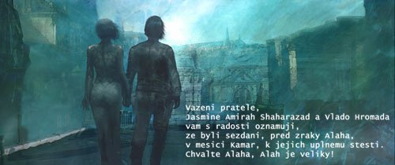
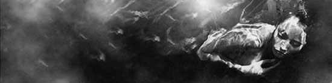
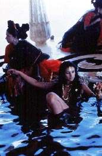

Jasmine's diary
®ivotopis:
 Jasmine Amirah Saharazad - Nova:
Jasmine Amirah Saharazad - Nova:
Narodila se v Dama¹ku, v prùmìrnì bohaté muslimské rodinì, otec i matka byli policejními dùstojníky.
Dostalo se jí základního vzdìlání v armádní ¹kole, díky vlivu jejího otce a strýce a díky svýM schopnostem nastoupila speciální druh výcviku, který ji mìl pøipravit na povolání agentky-konkubíny. Jedy, boj beze zbranì, práce s daty a elektronikou a nakonec sada speciálních implantátù.
Tìsnì pøed ukonèením výcviku se oba její rodièe "ztaratili" pøi potírání jakési tajné organizace.
Více se nedozvìdìla.
Jasmínin svìt se zhroutil, utekla z internátu v prvotním ¹oku. Následnì se pokusila zjistit víc, ale lidé, milí strýèkové, se promìnili v nemluvné kamené tváøe, nebo byli pøíli¹ hluboko v jádru organizace, kam u¾ se nemohla vrátit. Od pátrání neupostila, uvìdomila si, ¾e musí postupovat opatrnì. Zasvìtila vendetì celý svùj budoucí ¾ivot.
K prvním penìzùm jí pomohlo právì to k èemu byla cvièena. Prodávala se a kradla na úrovni. Podaøilo se jí nashromá¾dit nìjaké informace o pøípadu. Alespoò pøibli¾nì u¾ znala svùj cíl. Pentax. Nadnárodní organizace, o ní¾ ví na svìtì jen nìkolik málo vysoce postavených lidí a obchodníkù na burzách. V¾dy pùsobí v zastoupení minimálnì jedné firmy. Organizace musí být dokonalá.
V Dama¹ku jí postupnì zaèalo hoøet za patami, její bývalí "zamìstnavatelé" by rádi dostali zpìt její implantáty, co¾ by samozøejmì znamenalo její smrt.
Na letenku ji¾ mìla, nakoupila je¹tì i nìjaké nelegální souèástky a odjela do Londýna, kam míøily její informace.
I v Londýnì si vydìlávala tìlem, ale díky svým schopnostem si dokázala vytvoøit stálý okruh klientù, kteøí se jí stali nejen zdrojem pøíjmù, ale i informací, které z nich tajnì ¾dímala.
Jeden z nich, se zdá momentálnì i nejcenìj¹í, je gotic, shadowrunner, decker a fe»ák Vlad, odnìkud z východu.
Neprohlédnul ji a ona jej zaèala nenápadnì stopavat v matrix i v po svìtì. Obèas jeho stopu ztratila, ale zná jeho zpùsob práce v trixu i nìkolik jeho safehousù, tak¾e jej zase v¾dy na¹la.
Zachrana Vlada
Vlado lezel v nemocnici, predavkoval se H, nastesti jsem jej nasla vcas. Nejsilenejsi na tom vsem ale je to, ze kdyz se v nemocnici probral, byl jako nekdo uplne cizi.
Zdalo se, ze vubec nevi kdo jsem, ani kdo je vlastne on.
Lezlo to z nej jako z chlupate deky, ale nakonec jsem z nej vypacila, ze je Johny, kouzelnik z Vladova teamu. Pokusili se pry zachranit Timmotyho, ale nejak to zrejme nevyslo. Zdal se byt dost nervozni a rikal neco o tom, ze by bylo dobre najit telo, ktere mu patri, jinak, ze bude Vladova oslabena duse z tela uplne vytlacena a zahyne. Co je my po nem, ale...
... nemohla jsem si pomoct, proste jsem to musela udelat. Ne nejsem zamilovana, urcite,... je to jen pratelska vypomoc, vzdyt mu to prece dluzim i kdyz on to nevi...
Kouzelnik neumel zachazet ani s Vladovym autem, ani s deckem, takze jsem to vsechno zbalila (ta elektronicka masinka je vazne moc pekna, i kdyz trosku zastarala, stejne je rychla jako cert) a jelo se. On spal na vedlejsim sedadle a jednou za cas se vzbudil jen aby navigoval, nekam k Hadrianove Valu.
Nase cast teamu mela dost velky nadskok, ale Johny byl cim dal v horsim stavu, zastavila jsem tedy u lekarny pro nejake posilujici prostredky, ale odmital je.
Mezitim stihnul Saman a Rigger, kteri nam jeli na pomoc, napachat straslive prusvihy tim, ze nabourali a zavrazdili nahodnou policejni hlidku, idioti.
Usoudila jsem, ze je cas zahodit stary telefon a pouzivat dusledne latexove rukavice, strelecke bryle a kukla znemozni identifikaci tvare.
... eh, na rutinni silnicni kontrolu jsme opravdu nemeli cas, zvlast, kdyz sedim za volantem v plne polni.... Pzzz.... Tazer, je naprosto uzasna zbran, nikomu neublizi, je legalni a pritom se s nim clovek dokaze vyhnout tolika problemum.
Jsme na miste, hlupaci dorazi zachvilicku...
Johny se uplne slozil, asi proto, ze zahledl jak je na tom jeho telo v zalomene v aute uprostred te romanticke louky...
Indian, ocividne saman, se taky slozil, asi ma nejakou praci v tech jejich astralech.
Dohajzlu, ale do toho auta se neda dostat...
...nekonecne vteriny... Johny-Vlad se chveje, modra a u ust ma penu... pohni ty samanska lamo, nebo te nakopu, kurva, KURVA!
Konecne, kouzelnici se probrali, auto...
Jo jde otevrit... Johny-Vlad, chrapti neco o rukavici. Telo v aute ji ma na ruce, je kovova, cela ojinena a pritom horka... kde mam kleste...
Rukavice je dole,...
Telo zacalo dychat... co Vlad?
Oh, otevrel oci, zije...
Sundala jsem ze sebe vsechno obleceni a zabalila jsem jej do nej, byl hrozne studeny. Oci mu tekaji, nejak zmatene, ale snad se vzpamatuje.
V aute s Johnyho telem byl jeste bagl, se zbytky kybernetickeho psa, znam jej, z Vladova vypraveni, mel jej velmi rad. Zda se ze mu uz nejspise pred par desitkami minut dosla kapacka, nastesti je jeste na zivu. Sice nejsem zadny doktor, ale tech par dermu, co mam po kapsach a nova kapacka z toho baglu, by snad mohlo pomoct.
Zda se ze ano, heureka, padame.
Nalozila jsem Vlada do auta, spolu s povolnym Johnym a vyrazime. Doufala jsem, ze Rigger a Saman snad jeste nedke obsatraji nejake nove auto, protoze to jejich uz nejspis znal kazdej policajt v okoli. Nastesti uposlechli me rady a slohnuli sanitku, takze se nam spolecnymi silami podarilo stabilizovat psa, Vlada i Johnyho.
Pozdeji jsem se dozvedela, ze v astralnich rovinach, prostupovalo Johnym i Vladem jakesy mysticke pouto, ktere hrozilo, ze je rozdrti a bylo jakymsi podivnym zpusobem spojene s Johnyho rukoavici. Moc jsem to nepochopila.
Vlado byl hrozne studeny a vydeseny, ze jsem si jej musela vizt s sebou domu. Vanessa, moje sefova, sice bude nadavat jak uz jen stetky umej, ale co vydelavam tomu jejich podniku pekne sumy penez, takze jim nic nedluzim.
Jasmina's diary: Svatba
Bylo to naprosto zrejme, nedalo se to dale zapirat. Jsem do Vlada zamilovana, poprve, takovy podivny pocit... a zda se, ze laska je opetovana, i kdyz diky jeho heroinu jen platonicky. Nevadi, snad to nejak dopadne, alespon mu nevadi moji zakaznici.
Sefova souhlasila, ze muzem zit v Dark Secret spolecne, ale s jedinou podminkou, a to tou, ze se vezmeme. Ech, je mozne, aby byla stetka tak puritanska? Nebo snad prave proto? Nevim, nicmene Vlad souhlasil a ja domluvila tradicni islamskou svatbu.
Snad budeme stastni.

Zbrne, zbrane, zbrane...
Siberia
Na svatebni oslavu nebyl cas. Dimitri zavolal odnekud ze Siberie, ze maji potize s dopravou, nedostatkem vybavy a vubec. Za 50 tisic jsem je nasla a odvezla je pronajatym nakladakem plnym vybavy, kterou jsem vyzvedla z jejich safehousu.
Posranym navrch
Myslim, ze to udelal nekdo z teamu... po prenocovani v jakemsi levnem hotelu,... uz jsem par mrtvych videla, ale tohle bylo vazne dost odporne.
Policejni zprava:
Obet Dimitri Oblukov (bez IOC) byla nalezena dne 2.11.2064 v pokoji 23 hotelu Osamela Srdce pokojovou sluzbou (Natalie Osecka, IOC: 511-43a-4c4-1) v case 9h a priblizne 40minut.
Zprava patologa:
Pricinou smrti byl bezpochyby jed. Tvar obeti i krcni svaly zcela zjevne vypovidaji o krecich a duseni.
Horni cesty dychaci jsou zdurele a tkanivo ochrnute.
V pacientove zaludku, krvi ani jatrech nebyly nalezeny zadne pozustatky jedu.
Predpokladany cas umrti 02:00 az 02:40.
Na tele obeti nebyly nalezeny zade stopy nedavneho nasili. Naproti tomu bylo nalezeno nekolik starsich jizev, zrejme "na ulici osetrenych" strelnych zraneni.
V tele obeti bylo nalezeno nekolik cybernetickych installaci viz. priloha w1a
Pitvu a ohledani provedl: mjr. mudr. Vasili Lev Pitkin, 2.11.2064, 13:37-16:02.
a tak dal. Nikde ani slovo o krvavych zvratcich a v krecich rozedranem tele. Proste hnus.
Kdo? Co vim je to, ze po veceri v supliku meho stolu chybela jedna ampulka. Kdo vedel, ze prave ona je ta dulezita mezi francouzskymi a arabskymi licidly?
Zadusni oslava
V prubehu tiche oslavy, ve Viperove obskurnim baru v Londnu, jem jim to rekla...
V Dundee ceka velka rana. Ruska lod kazdy mesic vozi cigara a alkohol, ale taky bednu plnou zbrani, kterou ma dostat nejaka rodina MacKelehenu. Je jasne, ze potrebujem penize, protoze vsechny posledni akce je jenom pozraly a najit Jeho urcite taky nebude zadarmo.
Penize jou nas cil, protoze On je nas cil.
Pochopili, nicmene Viper a Tenochtitlanskej indos do toho nejdou, pry to neni jejich boj, stejne tak Ashitaka. Slotr ma nejkou jinou praci. Njn, tak je to, kdyz jedna nema dost penez na poradnyho chlapa.
Viper alespon dohodil GoTo na nejakeho orciho mlatice, pry je to obrovskej cernoch nezvyklich kvalit - uvidime. Ashitaka zase zajistil kontakt na Zoldacky Trpaslici Klan. Jsou sice trosku legracni svou vernosti penezum, ale o jejich sebevrazedne odvaze koluji ve stinech legendy.
Penize!
Ostatni jeste slavili, nebo uz pospavali po stolech, kdyz jsem se vypravila na pruzkum. Hloupa neopatrnost.
Najit budku, odizolovat draty, premostit, prerusit, pripojit snimace... hracka, Vladova skola ulice.
Hacknout pristav v Dundee... i to mela byt hracka.
Nebyla.
Mesto Dundee muze byt na sveho webmastra pravem hrde. Teprve za 2h jsem mela jizdni rady na pristi mesic i s cislama beden a tesila jsem se na koupelnu a postel.
Idioti. Stali pred budkou s digitalem a bylo jasne, co fotili.
Prvni sel k zemi po prvni rane pesti, sice silak, ale ona holka s elektrickejma rukama si taky obcas prijde na svi.
Jenomze ten druhej hlupak asi zpanikaril a misto aby utek, vytahl jakousi odporne zbastlenou kudlu.
Prvni ranu jsem vykryla, ale byl moc silnej, takze jsem malem upadla, coz mu dalo moznost me seknout. Uaaa!
Jeste i zpetne ta vzpominka boli jako tepenne krvaceni.
Sily me zacaly opoustet, ale vsechna ta draha vylepseni me podrzela a ten zprdelesrac sel k zemi.
Svet rychle pozbyval barev... derm... posledni volany... dve dlouhe zmacknuti tlacitka... tri zazvoneni... vem to prosim...
"...Johny? Najdi me! S! ..."
Nasel, i s Maotem. Pry jsem lezela v bezvedomi v kaluzi krve, trosku potluceny deck pevne v naruci, nikdo z chodcu se na me nedival.

Je to zvlastni pocit, kdyz clovekem prochazi uzdravujici kouzelna energie, ktera rovna zprerazene kosti, zavira rany bez jizev a zabiji infekce. Nepopsatelny ve sve blahodarne a nekonecne obrovske vlne bolesti, proti ktere nefunguje zade anestikum.
Kdyz me vezli domu, svet se rozostroval ve vlnach miru a klidu, jak moje telo postupne polikalo 31 druhu 100% nenavykovych opiatovych odvozenin...
Rano moudrejsi vecera
Zraneni stale jeste bolelo a opiatova kocovina byla naprosto zdrcujici, takze jsem zaznamenala jen to, ze nekdo z teamu pronajal farmu na pul cesty nakladu, ze venku hrozne prselo a to, ze jsem se znovu probudila ve vojenskem spacaku v jakesi stodole plne sena.
Neustale bubnovani tezkych kapek, jez nedokazalo prehlusit ani melancholicke brnkani na kytaru a spanelsky zpev, me iritovalo. Cas vypadnout.
Kdyz si Langusta vsimnul, ze jsem vzhuru, vstal od vojenskeho varice, a predstavil nas.
"Chose Armando," rekl kytarista ze silnim spanelskym akcentem, procez, aniz by prestal hrat, kopnul do pouzdza od kytary.
Zacala jsem se hrozne smat, protoze jedna ze zbani byla opravdu... ehm... velice muzna.
"Jasmina," predstavila jsem se desperadovi.
Mezitim prijel zmokly Slotr, ze pry se jde slavit... uz nevim co.
Tak tak jsem se stihla prevlect a nalicit a uz jsem byla tazena do jakehosi mistniho pubu.
Vsichni se po nas otocili. Aby ne.
Dvoumetrovy, ebenove cerny ork (Habat Kabut, nas kontakt od Vipera), spanelsky hezoun, hranaty arabsky svalovec, indian oveseny pomalovanym haraburdim a priserne bleda arabska kraska. Vsichni zmokli jako slepice.
Nejdrive nekdo koupil nejake drasticky drahe piti, pak nas Maote predstavil jako kocovne muzikanty, no a kdyz uz to vypadalo, ze nam to projde, otevrel Armando pouzdro na kytaru a odhalil pred celou hospodou svou muznou zbran (
"Cyrkus, a ja jsem vousata tanecnice," nemohla jsem si neodpustit.). Cela hospoda se dala do huronskeho smichu a zacala jedna z nejsilenejsich pitek meho zivota.
Vzbudila jsem se s vyhrnutou sukni vedle nejakeho domorodeho chlapa, s paradni kocovinou. Langusta uz obstastnoval Kabuta serii rozmazanych fotek Armanda a hospodske Laury, kterezto zachycovaly snad veskere varianty souloze na tema lahve alkoholu, dva piaci a kulecnikovy stul.
Jak rikaji evropani, rano moudrejsi vecera.
Odberatel a zbozi
Cas, kdy mel dorazit naklad se neuprosne priblizil a stale jeste nebyl ani kupec, ani plan. Kabut se ukazal jako reseni prvniho problemu. Pochazi totiz z jakehosi africkeho kmene, ktery vede valku proti tamni vlade, a tak jim kamion zbrani prijde vhod. Kupec dorazi priblizne za tyden po zbozi.
Planovani unosu jsem si vzala na starosti ja a Maote.
Plan:
Maote prevezme dotykem a kouzlem kontrolu nad ridicem nakladaku, tak ze ten, ve vhodny moment sjede ze sve trasy a prijede na stare vrakoviste.
Na vrakaci bude cekat Langusta, ktery ridice zneskodni, prelozi zbozi do naseho nakladaku a odjede na pronajatou farmu.
Kabut odklidi prazdny kamion a vrati se vlakem za ostatnimi.
Pro pripad, ze by Maoteho kouzlo neklaplo, Kabut propasuje Ludka (autista, ale ultraschopny rigger, ktereho, aniz jsem si toho vsimla, nekdo z bandy sebral ve vesici pobliz farmy, kde oral pole riggovanym traktorem) do kancelare riggera ovladajiciho pristavni jeraby. Luda pak ve vhodny cas pozdrzi spravnou bednu a da tak Maotemu druhou sanci.
Ja budu sedet jako ridic v nasem aute s headsetem na hlave a budu koordinovat celou akci. Taky povezu Kabuta na vrakoviste.
Genialni ze?
Realizace:
Langusta se pripravil na vrakovisti i se svojim milovanym odpalovacem a plastickou trhavinou. Hotovo.
Kabut vzal Ludu do administrativnich prostor doku. Tady ale prisla prvni chyba. Nikdo z nich totiz nedokazal prekonat dvere chranene zamkem se ctyrmistnim pin kodem.
Clen ochranky sice Kabutovym pricinenim tise zesnul, ale kod z nej nevypadnul. Maote ma jen jeden pokus. Smula.
Maote postaval mezi bednami pod jerabem a cekal na vhodnou prilezitost.
O Kabutove neuspechu uz vedel, take oznamil, ze v kamionu je misto, kam jeho kouzelny oci nevidi.
Prilezitost nastala, Maote svuj ukol zvladnul, nikde zadna ochranka, rutina.
Nastoupil s ridicem do nakladaku...
Vedle me na sedadle tou dobou uz sedel nastvany Kabut a v zadu drepel sileny Luda.
Prvich 10km bez problemu, ale v momente, kdy mel ovladnuty ridic uhnout, se v kabine zjevil nejakej britvak. Bylo jasne, ze nakladak nekdo bude hlidat, ale ze to bude magicky maskovana lidska plechovka hovici si ve spacim prostoru, to nas nenapadlo. Holt kocovina pri planovani.
A Maote malem zarval.
Nevim co presne se v tom aute stalo, mela jsem prenos jen z hedsetu, ale kdyz se Mao znovu ozval, tvrdil, ze je vazne zranenej a kamion, ze ridi cizi britvak.
Kabut prevzal rizeni naseho Saladinu a ja sla v klidu poskladat M15A-Barett.
Dokonala puska pro zenu. Langusta ji rika "Puska na nosorozce" a miluje ji.
Ani se mu nedivim, tahle patnactikilova kraska dokaze s prehledem strilet davky neuveritelne vzacne a drahe .50 munice, ktera proderavi opravdu i nosorozce jako plechovku od koly.
Dodavka predjela kamion.
Zacilila jsem v leze na Langustove palande...
"Fff!," oznamila puska durazne.
To co zbylo z britvaka za volantem, jeste dlouho Maoteho bude desit ze spanku.
Nevim jak je to mozne, ale indian v ten moment sedel za volantem kamionu (vazne mu tu spoust nezavidim).
Kabut uz to odridil.
Kdyz jsme se vsichni sesli v nasi stodole, sedel langusta na jedne zelene bedne a tvaril se kysele.
Taky mel proc. Ta krabice totiz obsahovala jediou cenou vec z celeho konteineru. Dalekonosny kanon SUKA.
Vsecko ostatni byly jen velice malo cenene a opotrebovane kalasnikovy, a ani ty vsechny nedokazaly pokryt to, co jsme naslibovali kupci.
"Zasrany kalachy, kurva! Tos teda pekne posrala ty arabska pico. Vzdyt sem do toho vrazil vic nez vubec dostanem i kdyz to prodame i s nakladakem a za trojnasobek. Kurvo blba hackerska!," hrozne zuril a ja to chapala. Dovolovat si ale zas moc nemohl. I ja v tom mela prachy. A hodne.
A pak to nekoho napadlo, tusim Maoteho.
"KLID!"
"Hele Jasmino, nemela to bejt pravidelna dodavka pro nejakou rodinu?
Jestli to dostavaj kazdej mesic, tak maj mozna sklad, kterej je toho plnej a rodina i s par zoldakama ...," nechal proslov vymluvne nedokonceny.
Nasledovala chvilka dohadovani, ale vysledek byl na snade. Maote ma pravdu, prachy potrebujem vic nez hodne a zda se, ze takovou ranu mame sanci zvladnout.
Utok
Na takovou akci nas bylo relativne malo (ja, Langusta, Kabut, Maote, Armando), tak jsme se rozhodli, ze najmem jeste dva trpaslici zoldaky. Nejsou prilis drazi, dvacet litru, a ctyricet za pripadnou smrt nebo trvale poskozeni. Stejne to byla nase posledni investice, protoze kasa byla prazdna.
Za dva dny dorazili. Rikali si Vilda a Filda, oba si vzajeme podobni jako vejce vejci, dokonce i zbrane a vybavu meli stejne, takze jedine podle ceho jsem je mohla rozeznat, bylo mnozstvi elfich usi, ze kterych meli udelane nahrdelniky. Byly tisi, pri praci pozorni, ale pomali.
Podarilo se mi ziskat satelitni obrazky oblasti, ktere s trochou vyptavani mezi domorodci odhalily, ze nasim cilem je velka a stara farni usedlost, jejiz pozemky jsou prevazne zarostle lesem a obehnane vysokou kamenou zdi.
Maote se tedy vydal na astralni pruzkum.
Poprve jsem tehdy zahledla jak chvili je a najednou neni. Proste zmizel.
Kdyz se vratil (nebyl a najedou byl), byl cely potrhany a od krve, ale zaril jako Slunko.
"Nasel jsem diru. Je to tunel, kterej vede primo do toho baraku a usti kousek od vedlejsiho kopce. Kdyz si pohnem, tak tam akorat nekoho stihnem a budem mit otevreno."
Nebylo na co cekat. Jeden z trpasliku si vzal Langustovu SUKU, ostatni kazdej co mel rad, naskakali jsme do aut a vzhuru na akci.
Po ceste z Maa vylezlo, ze ho zahlidli, pak ho nekdo napadl a on jej rozsekal na kusy, takze o nasem utoku uz vedi.
Takze myska si jde do pasti pro syr. Bezva.
Jinak nastesti Maote nekecal a po chvilce cekani v krovi se otevrely tajne dvere, ze kterych vybehl roztreseny muzik s laptopem podpazi. Sipka z meho tazeru jej uklidnila a jeden z trpasliku (ten bez SUKY) jej hned spoutal a odnesl do auta.
Cesta byla volna.
Maote zase zmizel, prvni sli trpaslici, Suka a Odstrelovacka, dal Langusta a Armando, oba s utocnymi puskami. Nakonec Kabut z lukem (!) a ja se svou novou hrackou od hekleru.
Asi po trech kilometrech betonoveho tunelu, dal Suka znameni stat. Oba trpaslici, aniz by na cokoli cekali, nebo se nejak pripravili, zamirili sve zbrane do tunelu tahnouciho do nedohledna a vystrelili.
Suka udelala ranu jako male delo, zvuk odstrelovacky zanikl.
Zalehla jsem a zacilila HK na dvounozce. Optika zbrane mi dala videt...
Vzdalenost 980m. Zasazeny ze Suky lezi rozvaleny v kulometnem hnizde, v prsnim platu jeho tezkeho pancire zeje otvor velikosti lidske hlavy, helma je v oblasti oblieje prorazena drobnou dirkou.
V te chvili se odnekud z poza mrtvoly vynoril dalsi tezkoodenec... s bazukou.
Strasliva rana, az v usich piska, smrad spaleneho masa a krik spolubojovniku.
Oba trpaslici mrtvi na zemi a po stenach, pratele od krve vsude okolo.
Nad tim vsim se tycil Kabut. Klidny uvolneny, napnul luk, primhouril oci a vystrelil. Pak se usmal, pomohl mi ze zeme a sel se poohlednout po ostatnich.
Jako zazrakem jsem zustala nezranena, zbran funkcni.
Dal uz jsem sla prvni ja spolu s Langustou, ktery jako jediny zvladnul SUKU.
Prosli jsme okolo mrtveho za kulometem a jeho spolubojovnika se sipem v krku (!) a vstoupili do rozlehle zbrojnice.
Langusta bez varovani vystrelil do zdi.
Padla jsem na zem se zbrani pripravenou.
Zed odpovedela na Langustuv pozdrav tim, ze se v nekolika mistech rozpadla a Langusta se, s vestou podobnou cedniku, sesunul na zem.
Byla rada na me, tak jsem se pridala do dialogu dvema granaty.
To uz pribihal Armando, bohuzel zrovna mluvila zed, takze i on mel co delat, aby ustal proud olova.
Moje cast proslovu vyvrcholila tvrdou recnickou figurou mikrogranatu a pointou davky.
Ve vedlejsi mistnosti byl chvilku klid, pak se ozvalo nekolik vykriku, zvuk -snad asi- parane latky a pak byl zase klid.
Armando zbledl a zacal zvracet.
Nedivala jsem se tam a sla obhlednout Langustova zraneni. Co slo jsem ovazala, pridala derm.
Doslo mi to uz chvilku pote co se Maote poprve vyparil.
Pri prohledavani domu se ma domenka potvrdila, kdyz jsem zahledla tela roztrhana na kusy necim, co muselo mit alespon patnacticentimetrove drapy.
Maote je vlkodlak.
Nove zitrky
Dum je obrovsky, krom skladu zbrani jsou v nem tri kompletne vybavene dilny, strelnice, sauna s bazenem a vyrivkou, posilovna, dojo a asi dvacet pokoju.

Maote dal dohromady zraneneho Langustu, vubec mu tu radost nezavidim, navic se zda, ze mu zraneni nejak poskodila cyberware, takze jsou jeho pohyby nekoordinovane a trhane.
Nese to o poznani lepe, diky memu sdeleni, ze muzik, ktereho jsem uzemnila tazerem je ucetni organizace, takze muzeme v jejich obchodech pokracovat.
Jeste nejaky cas bude sice na voziku, ale uz se pustil do organizovani, procita ucetni knihy a dokumentaci.
Podarilo se nam dojednat obchod se Zairskymi povstalci, protoze nase zbrojnice obsahovala vse co si jen mohli prat.
Z Koreje dostavame zbranove doplnky, ze duvou Ruskych zdroju zbrane a z Cech taktickou vystroj.
Rusti dodavatele sice ze zacatku delali problemy, kdyz zjistili s kym ve skutecnosti obchoduji, ale nakonec si uvedomili, ze jsme dobri lide a penize nesmrdi. Stejne jako starosta a nasi mili spoluobcane.
Laura si velmi oblibila Armanda a stala se tak uzasnym zdrojem fam. Je take dulezitym a duveryhodnym znalcem pomeru.
Mistni muzi a chlapci me miluji a od te doby, co jsem pro ne usporadala lov na lisku, nedaji na nasi bandu dopustit. Langustuv detsky den a vanoce uz nasi pozici naprosto stabilizovaly.
Prestehovala jsem k sobe do podkrovi Vlada. Travi vetsinu casu pripojeny na matrix nebo v heroinovem rausi. Milujeme se pres internet a je to presne ono. Fyzicky nedostatek sexu obstarava Slotrhauz, ktery se nastehoval do jednoho z pokoju v prizemi, alespon je trochu klidnejsi.
Privedl ssebou trolla co si rika Tamavenk, ktery rozebal snad veskerou elektroniku v dome. Slotr tvrdi ze tim vylepsil nasi bezpecnost o 300%.
Zajimalo by me, koli procent predstavuje ta cerna kulometna vez, kterou troll zbudoval ze zbytu materialu na strese dilen. Snad nikdy nezapomenu heslo.
Maote beha po okolnich lesich a vraci se pravidelne utahany jako zvire, kterym konecne take je. Pry take zabezpecil nas dum magickou barierou. Predpokladam, ze to znamena, ze oznackoval vsechy domovni rohy :)
Smutna zprava je, ze zemrel Jeho cyberneticky pes Packa. Poskozeni experimentalniho ware bylo prilis vazne a ani Tamavenk nebyl schopny jej stabilizovat.
Zaplatila jsem si ctvrtstrankove oznameni v mistnich novinach. Jednak si to zvire zaslouzilo, a je take mozne, ze si nenapadne zpravy vsimne jeho pan.
Uspesne se mi dari sledovat Langustovo podnikani, zalozila jsem spolu s nim fond na Jeho zachranu, do ktereho odkladame podily vsech, kteri s tim souhlasili.
a propos podily:
Langusta: 30%
Ja: 18%
Maote: 18%
Armando: 18%
Kabut: 15%
udrzba staveni a mestecka: 1%
S Kabut mam uzavrenou smlouvu uz od chvile, kdy jsem jej najala ve Viperove obskurnim baru. Vzhledem k tomu, ze jeho podil v soucastne dobe dosahuje sestimistnych cisel, myslim, ze si nemuze stezovat.
Obchody jdou stale lepe, ale uz ted je jasne, ze na shadowrun nas bude stale potreba, protoze i kdyby se nam podarilo koupit Jej zpet, o cemz pochybuji, musi se nase firma starat o sve trhy.
Moralnich predsudku jsme zbaveni zivotem a penezmi uz davno, ale obcas nektereho clena teamu napadne, ze by bylo dobre do sporu a valek zasahovat, tak aby nam rostl odber.
Nesouhlasim, protoze si myslim, ze je to zbytecna zatez. Angazovat se politicky ve valkach a sarvatkach by vedlo jen k potizim a zbytecnemu zanechavani stop proti nasi firme.
Vetsinou to skoci hadkou, ktere se odmitam zucastnovat, takze odchazim bojovat do ringu s neutralnim Maotem nebo cvicit do posilovny.
Mam dojem, ze oboji se bude jeste hodit.
Vse pro firmu
v teto casti prbehu jsem zamerne vynechal:
Korea - maote, johny, langusta
Patagonia - maote, muz s kytarou
Doplnit.
Geaza
Bylo naprosto jase, ze obchodni bilance musi rust strmou krivkou, protoze nemame nekonecne mnoho casu, nez se vsechno posere. Na nasich kontech ve Svicarske Orbitalnich Bankace bylo sice neco pres deset milionu, ale to i bez chamtivosti podilniku neni dost. V momente, kdy to rozjedem, musime mit moznost povazovat sve zdoje za nevycerpatelne.
Az do smrti :)
Ve Skotske pevnosti se ukazal uz i Johny. Od te doby, co jsem jej videla naposled, se docela dost zmenil. Cely v bile, nejaka nova tetovani a dokonce i zenskou si pritah.
Jen co jsem ji uvidela, bylo mi jasne, ze budou problemy. Krasna, zrzava, sebevedoma, ale take uzvanena a naivni.
No jo, jenomze rozmluv chlapovi novou hracku.
Jacquelin me samozrejme nenavidela hned od tehoz pohledu. Dva kohouti na jednom smetisti, jak rikaji Evropani.
Po case se zacalo zdat, ze Jacquelin prestala Johnyho zajimat a zacala jej i stvat. Standardni prubeh.
Horsi bylo, ze se zacala i vyptavat a Slotr ji za jejimi zady, zcela spravne, prekrtil na geazu. Vzhledem k tomu, jak vyvadela, kdyz to zjistila, dalo se soudit, ze mela jiste magicke vzdelani.
Johny radeji odjel s Langustou na sluzebni cestu do Korei.
Kdyz se vratili, bylo na ne vypsane celokorejske patrani, ale produkce zbrojnich doplnku se zdvojnasobila.
Jednoho dne, to uz byl John zpet, Jacquelin vsechno zjistila. Desne se pohadali, Geaza vtrhla k Langustovi do kanclu, kde se zrovna hrabal v rozmontovane SUCE.
Ani se nedivim, ze tomu pretazenemu nervozovi ruply nervy. Nebyt Johna a meho zasahu, oddelal by Geazu jako psa.
Bylo nezbytne svolat poradu a problem resit. Vysledkem byly dve drobne ampulku, ktere jsem prinesla ze sveho pokoje a vlozila je pod stolem Johnovi do dlane.
Chudak, myslel si, ze po tom vsem behani se konecne usadi.
Kambodia
Bylo nezbytne najit nove trhy, Armando se o neco pokousel v Patagonii, ale pochybuju, ze tucnaci budou hodnotni odberatele zbrani.
Rozhodla jsem, ze by bylo dobre zalozit mezistanici pro obchod se Staty Ameriky nekde na azijske pude. Ukazalo se, ze nejvhodnejsi je pro tento ukol Kambodia.
Nastudovala jsem pruvodce a satelitni snimky. Matrix mi pomohl najit vhodnu mistni stavebni firmu, Langusta pridelil penize. Tamavenk a Kabut jeli semnou primo na misto.
Upocena dira zdecimovana valkami, nedostatkem, nemocemi a svobodnym podnikanim, takova byla zeme ve ktere se nam podarilo za pul roku zbudovat zakladnu s letistem, pristavem a asvaltovou silnici.
Obrana
Zvykla jsem si spavat v hlavni hale mezi tou troskou veci, ktera nepatrila stavarum, protoze jsem v te dobe mela jiz pomerne bohate zkusenosti s kambodzanskou nenechavou mentalitou.
Tamavenk dokoncoval zabezpeceni obektu nekde pod strechou a Kabut bud spal, nebo meditoval...
...hluk exploze byl enormni. Ozvala se od predni brany... tam je prece trpaslici zoldak s tezkym kulometem... Jediny pohled z okna potvrdil, ze zoldackemu klanu dluzime dalsich ctyricet tisic.
Zase sem zalehla a pripravila si na dvojnozku Tamavenkuv prebytek - LK Dektarev. Krasna ale zastarala zbran bez doplnku.
Nase pristavni vez zpustila zbesilou palbu, stejne jak Tamavenkuv dalkove ovladany kulomet z hnizda na strese, ale kovovou potvoru, ne nepodobnou obrovskemu brouku, to ani nezpomalilo.
S rachotem projela zbytky brany...
Kdesi jsem cetla, ze minigun clovek pozna podle zvuku rotujicich hlavni drive, nez vubec vystreli. Je to pravda.
Po jednom z trpaslicich zoldaku, ktery se ukryval za stavarskou dodavkou, zbyla jen ruda mlha.
Dalsi dva opetovali palbu, ale bezvysledne. Chvilka ticha, pred bouri. Prikrcila jsem se.
Vzduch pred budovou prorizlo ostre zasvisteni nasledovala tlumena exploze.
Minigun mlcel.
Vyhledla jsem z okna a rovnou zahajila palbu na utocniky, kteri v zaplave dymu opousteli oceloveho brouka, podobne jako kdysy opousteji potapejici se lod.
Jednomu z nedostatecne ukrytych utocniku zmizela po me davce hlava. Uz ji asi nepotreboval.
Zacalo to na novo: zbyvajici trpaslici, Tamavenk, pristavni vez, krysy z panceraku...
"...ssssBOOoM!," ohlasil se minomet, ktery pred chvilkou zboril predni vez.
Transporter jsem doresila dalsi davkou z Dektareva, ale minomet je uplne mimo me moznosti.
Ze zbyvajici veze se ozval charakteristicky zvuk SUKY, ale dalsi zasvisteni a exploze, mi sdelily, ze minomet stale existuje.
A dalsi a dalsi. A pak jenom ticho.
Roztrasla jsem se na celem tele. Minomet. Trubka s hrebem na konci a stojan. Mohla jsem chcipnout tak snadno.
Zapalila jsem si cigaro a pozorovala pres prostrilene okno Tamavenka parkujiciho obrneny transporter na misto byvale brany. Nebyl temer poskozen az na okno strilny, kterym prosel Kabutuv vybusny sip. Ten clovek, vlastne ork, ma vazne zajimave a neobvykle kvality.
Trpaslici privedli prezivsiho zajatce.
Propustila jsem jej, mel stesti, ze to peklo prezil a bude moct vypravet, jak to dopada, kdyz se nekdo postavi MacKelehenum.
Patagonia
Povstalecti tucnaci nakonec zbrane koupili, ale ani s jejich pomoci ne a ne se ubranit. Shaneli tedy nejake lidi, kteri jim pomohou s dobytim pevnosti veleni diktatora ci co. Langusta to vzal. Zadna politika, zadne vmesovani. Eh.
Nastesti jsem hrala v cele akci jen velice malou roli, ale i tak jsem malem prisla o zivot. Odstrelovala jsem opevnenou vez, aby mohl proletet nas vrtulnik.
Ukol se nam podarilo splnit pouze castecne, potom jedna dobre mirena raketa stala nasi organizaci dalsich 40 tisic a mou a Kabutovu cast ukolu musel prevzit staricky povstalecky tank. Splnil ji pry dobre.
Kdyz jsem se vzbudila na osetrovne, vsechna zraneni jsem mela magicky zhojena a Maote se trapil s Kabutem napojenym na pristroje. Vubec jsem orku lecbu nezavidela, ale to uz se asi opakuji.
01/10/04 17:43:00